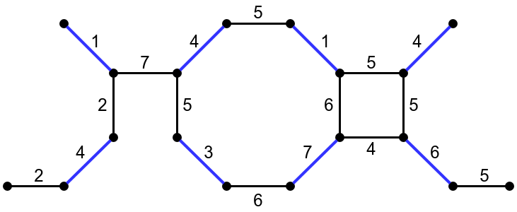
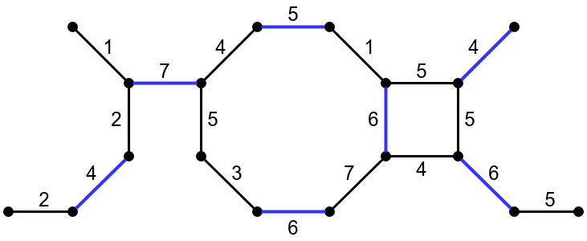

template <typename Graph, typename MateMap> void maximum_weighted_matching(const Graph& g, MateMap mate); template <typename Graph, typename MateMap, typename VertexIndexMap> void maximum_weighted_matching(const Graph& g, MateMap mate, VertexIndexMap vm); template <typename Graph, typename MateMap, typename VertexIndexMap, typename EdgeWeightMap> void maximum_weighted_matching(const Graph& g, MateMap mate, VertexIndexMap vm, EdgeWeightMap weights); template <typename Graph, typename MateMap> void brute_force_maximum_weighted_matching(const Graph& g, MateMap mate); template <typename Graph, typename MateMap, typename VertexIndexMap> void brute_force_maximum_weighted_matching(const Graph& g, MateMap mate, VertexIndexMap vm);
Before you continue, it is recommended to read about maximal cardinality matching first. A maximum weighted matching of an edge-weighted graph is a matching for which the sum of the weights of the edges is maximum. Two different matchings (edges in the matching are colored blue) in the same graph are illustrated below. The matching on the left is a maximum cardinality matching of size 8 and a maximal weighted matching of weight sum 30, meaning that is has maximum size over all matchings in the graph and its weight sum can't be increased by adding edges. The matching on the right is a maximum weighted matching of size 7 and weight sum 38, meaning that it has maximum weight sum over all matchings in the graph.
|  |  |
Both maximum_weighted_matching and brute_force_maximum_weighted_matching find a maximum weighted matching in any undirected graph. The matching is returned in a MateMap, which is a ReadWritePropertyMap that maps vertices to vertices. In the mapping returned, each vertex is either mapped to the vertex it's matched to, or to graph_traits<Graph>::null_vertex() if it doesn't participate in the matching.
The maximum weighted matching problem was solved by Edmonds in [74]. Subsequently, Gabow [75] and Lawler [20] developed methods to reduce the run time from O(V4) to O(V3). The implementation of maximum_weighted_matching follows a description of the O(V3) algorithm by Galil [77].
Starting from an empty matching, the algorithm repeatedly augments the matching until no further improvement is possible. Alternating trees and blossoms are used to find an augmenting path, in a way that is similar to maximum cardinality matching. A linear programming technique is used to ensure that the selected augmenting path has maximum weight. This involves assigning dual variables to vertices and blossoms, and computing slack values for edges.
The outline of the algorithm is as follows:
The implementation deviates from the description in [77] on a few points:
If edge weights are integers, the algorithm uses only integer computations. This is achieved by internally multiplying edge weights by 2, which ensures that all dual variables are also integers.
A brute-force implementation brute_force_maximum_weighted_matching is also provided. This algorithm simply searches all possible matchings and selects one with the maximum weight sum.
boost/graph/maximum_weighted_matching.hpp
An undirected graph. The graph type must be a model of Vertex and Edge List Graph and Incidence Graph. The graph may not contain parallel edges.IN: VertexIndexMap vm
Must be a model of ReadablePropertyMap, mapping vertices to integer indices in the range [0, num_vertices(g)). If this parameter is not explicitly specified, it is obtained from the internal vertex property of the graph by calling get(vertex_index, g).IN: EdgeWeightMap weights
Must be a model of ReadablePropertyMap, mapping edges to weights. Edge weights must be integers or floating point values. If this parameter is not explicitly specified, it is obtained from the internal edge property of the graph by calling get(edge_weight, g).OUT: MateMap mate
Must be a model of ReadWritePropertyMap, mapping vertices to vertices. For any vertex v in the graph, get(mate,v) will be the vertex that v is matched to, or graph_traits::null_vertex() if v isn't matched.
Let m and n be the number of edges and vertices in the input graph, respectively. Assuming the VertexIndexMap and EdgeWeightMap both provide constant-time lookup, the time complexity for maximum_weighted_matching is O(n3). For brute_force_maximum_weighted_matching, the time complexity is exponential in m.
Note that the best known time complexity for maximum weighted matching in general graph is O(nm+n2log(n)) by [76], but relies on an efficient algorithm for solving nearest ancestor problem on trees, which is not provided in Boost C++ libraries.
The file example/weighted_matching_example.cpp contains an example.
| Copyright © 2018, 2025 | Yi Ji (jiy@pku.edu.cn), Joris van Rantwijk |